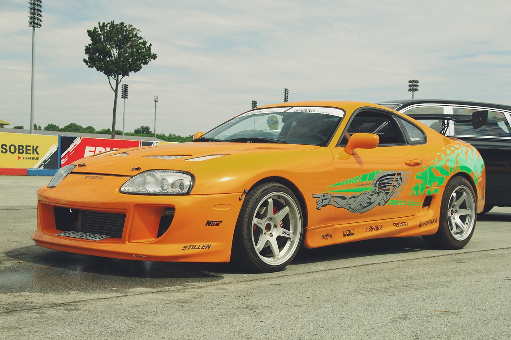
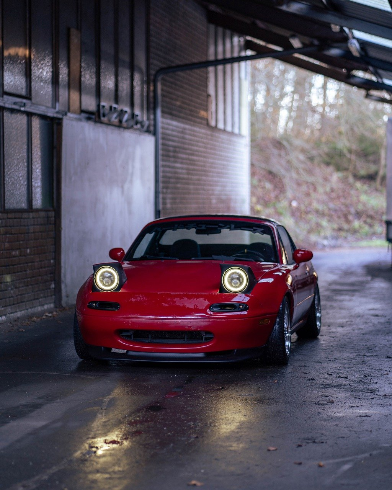

This section is all about jdm cars and the culture of japanese car guys
This is a R34 Nissan Skyline, this car was given the nickname "Godzilla" by Japanese street racers in the 90's. The car was given this name after winning many races, not all of which were exactly legal.
This is the legendary Toyota Supra MK4, this car gained a lot of it's popularity because of the movie "Fast And Furious Tokyo Drift" and a scene where the character driving the Supra beats a Ferrari.
This is a 1997 Mazda Miata, a car loved by many for it's affordability, sportyness, and most of all its eyes. the headlights on this car give it a personality not seen with most, for this reason it is a super popular first car, and overall popular car in general.
Home Page